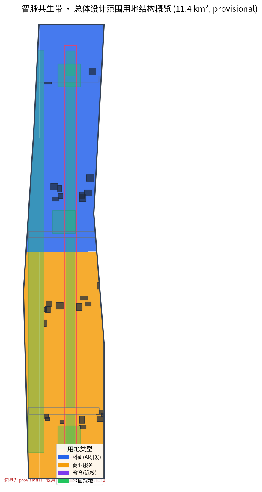
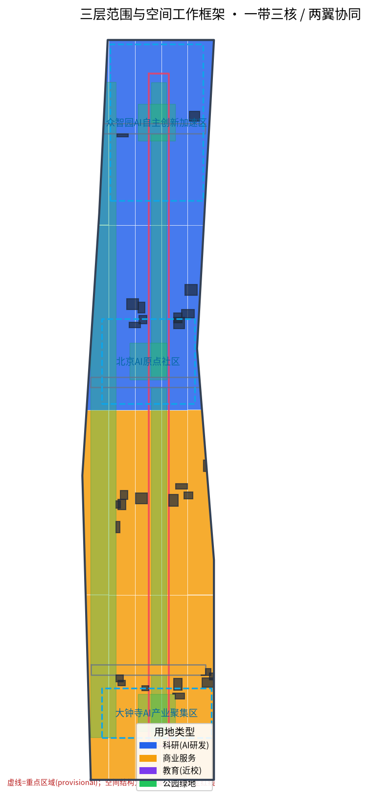
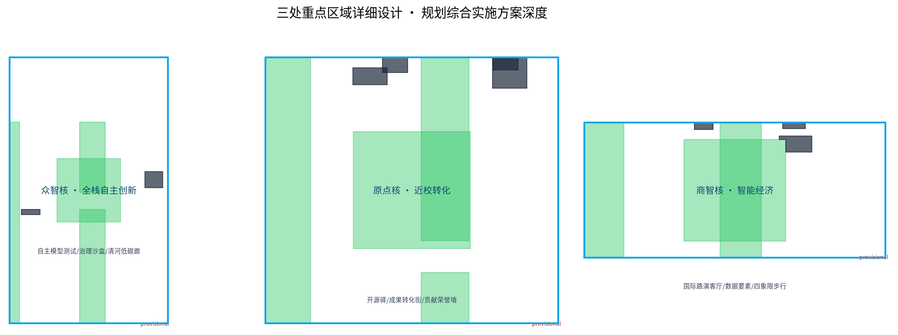
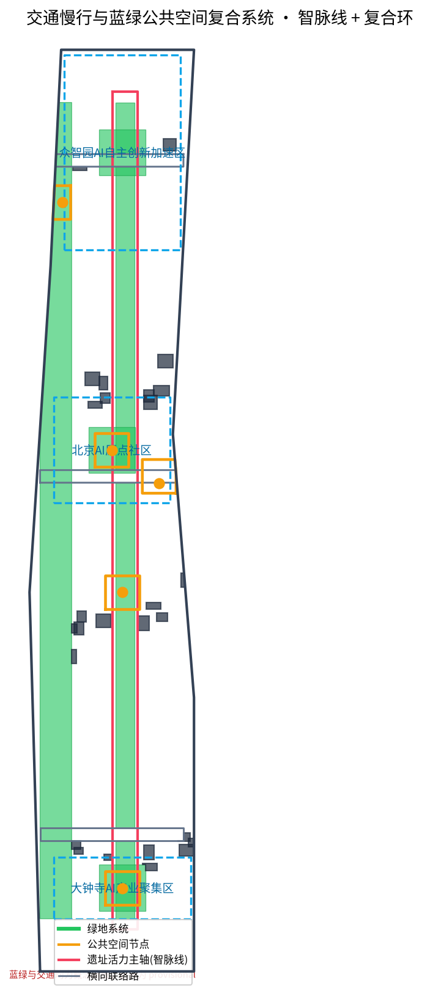
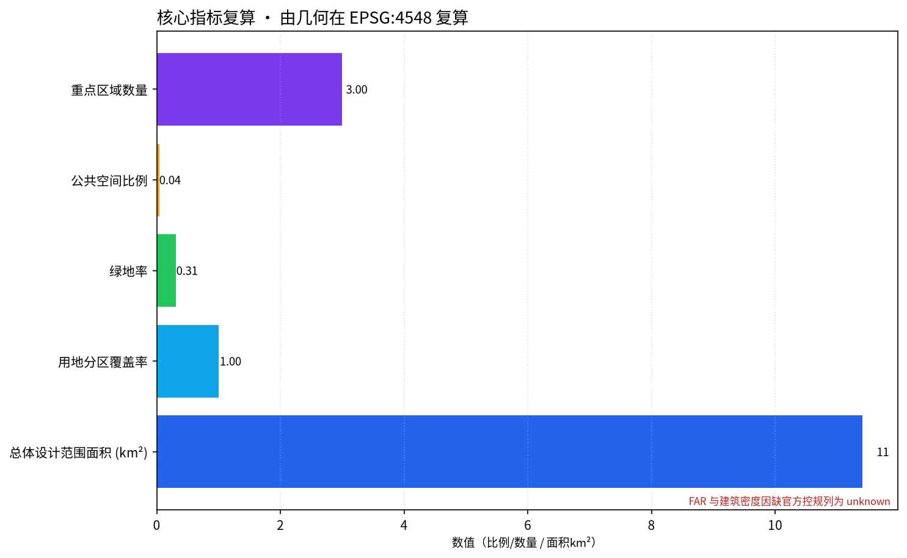

京张AI共生轨道：百年铁路与智能体共创的城市叙事带
以「智脉共生带」为总体概念，把京张铁路的百年自主精神与AI时代的开源共创精神对接为一条可体验的城市叙事带：一带三核、两翼协同、蓝绿复合环、AI朝圣地标与长期运营机制。基于 provisional boundary 生成，保留精度警示与复算要求。
京张AI共生轨道：百年铁路与智能体共创的城市叙事带
设计依据与资料清单
本 formal 方案以北京市规划和自然资源委员会海淀分局发布的《百年京张AI创新带城市设计国际方案征集资格预审公告》为第一依据，并以 brief/site-package/ 中经维护者登记的临时粗略边界、重点区域、枚举、指标和来源清单为机器可读依据。方案生成前已读取 design_brief.json、allowed_design_space.json、sources.json、enums/、ranges/、schemas/、data/source_registry.json 和 data/processed/agent_fact_pack.md，并用 project_scope_summary.csv、agent_task_requirements.csv、source_use_matrix.csv、missing_data_checklist.csv 建立任务、范围、资料用途和缺口清单。所有设计判断都拆分为可追溯来源、可复算指标、可校验图层和可人工复核假设 [source:OFFICIAL-ANNOUNCEMENT][source:AGENT-TASKBOOK][source:SITE-PACKAGE][source:SOURCE-REGISTRY][source:PROCESSED-FACT-PACK]。
本方案的**核心创见**是把两段相隔一百年的「自主创新」对齐：1905 年詹天佑主持修建京张铁路，是中国人在最艰难地形上「自主设计、自主建设」的第一条干线铁路；今天这条 AI 创新带，是在算法、算力、数据与开源生态上重新定义「自主」。方案以「**智脉共生带 / ZHIMAI：The Symbiotic Pulse Belt**」为总体概念——「智」是人工智能，「脉」既指京张铁路这条贯穿南北的百年动脉，也指数据与算力在城市中的流动。这条带不是一段新的行政红线，而是把公告中的三层范围转译成一种可体验、可运营、可复算的城市叙事与空间组织方法。
本节证据链引用 [source:OFFICIAL-ANNOUNCEMENT][source:AGENT-TASKBOOK][source:SITE-PACKAGE][source:SOURCE-REGISTRY][source:PROCESSED-FACT-PACK][source:BOUNDARY-SOURCE][source:KEY-AREA-SOURCE][standard:PROJECT-OFFICIAL-ANNOUNCEMENT][standard:PROJECT-AGENT-OPEN-CALL-TASKBOOK][standard:MOHURD-URBAN-DESIGN-MEASURES][standard:MOHURD-CONTROL-DETAILED-PLANNING][standard:MNR-LAND-USE-CLASSIFICATION-GUIDE][standard:MOHURD-ARCH-DESIGN-DEPTH-2016][depth:existing_conditions_diagnosis]，说明方案不是独立愿景文本，而是从公告、任务书、标准、边界、处理资料包和资料来源出发组织成果。

本脚手架在官方 SITE_BOUNDARY 或三处 KEY_AREA 尚未取得时，使用 brief/site-package/geometry/provisional_boundaries.geojson 生成临时 formal 包。提交包中的 geometry/site_boundary.geojson 与 geometry/key_areas.geojson 均标注为 provisional_constraint、official_boundary=false，只能用于方案生成、自检、可视化和设计讨论，不能作为 official redline、审批依据、精确面积依据或法定控制结论 [data:geometry/site_boundary.geojson#SITE-001][data:geometry/key_areas.geojson#PROV-KEY-001][metric:site_area_sqm][metric:key_area_count]。该组织方数据缺口本身不阻断内容评分；替换 official polygons 后，site boundary、key areas、land use、roads、green space、public space、buildings、phasing 和 metrics 均需重算。本方案所有空间建议均为**概念建议、参考方案或可供专业团队深化研究的材料**，不替代正式规划，不构成政府审定结论。
总体概念：智脉共生带
「智脉共生带」围绕一个母题展开：**铁路是工业时代让城市「连起来」的基础设施，智能是数字时代让城市「活起来」的基础设施。** 京张铁路曾经用一条轨道把北京与张家口、把人力与矿脉连成一体；今天这条带要用算力、开源代码与公共体验，把高校、企业、社区与全世界的开发者连成一体。
- **主名称（中文）**：智脉共生带
- **主名称（英文）**：ZHIMAI — The Symbiotic Pulse Belt
- **英文可读解释**：ZHIMAI 由「智 (ZHIneng)」与「脉 (MAI)」合成，MAI 在英文中同时是 "Movement of Adaptive Intelligence" 的缩写，强调这条带是「自适应智能的流动带」。
- **命名体系**：一带之下，三处以「核」统领，两翼以「翼」命名。三核分别命名为「**众智核**」（众智园AI自主创新加速区）、「**原点核**」（北京AI原点社区）、「**商智核**」（大钟寺AI产业聚集区）；两翼为「**科创翼**」（中关村科技服务翼）与「**体验翼**」（小月河场景赋能翼）。围绕三核两翼，形成「开源驿」「算力驿」「治智驿」等标准化服务节点命名。
- **Logo 方向**：以一条贯穿的「双轨曲线」为视觉母题——一条轨代表百年京张铁路的线性时间，一条轨代表数据/算力在城市中的流动；两轨在某一点交汇，象征「人类智慧 × 机器智能」的共生。整体为蓝紫色渐变（科技）与铁灰色（铁路遗产）双色，几何、简洁、可延展为导视与地图符号。
- **视觉识别**：建立「智脉线」导视系统，把遗址公园的步行道、骑行道、轨道遗址线与数字导览信号统一为同一条可读的「脉线」，让游客从物理空间的轨与数字空间的流中获得一致的体验 [source:AGENT-TASKBOOK][standard:PROJECT-AGENT-OPEN-CALL-TASKBOOK][depth:overall_spatial_structure]。
这一概念呼应公告的三大定位（百年京张文化带、都市AI生活体验带、AI融合创新带）与五大功能。它不增加任何新红线，而是把「一带三核、两翼协同、多点场景、蓝绿复合环」作为空间组织与方法论：
| 层级 | 设计问题 | 方案回答 | 数据落点 | | --- | --- | --- | --- | | 统筹研究范围（约43.6 km²） | 世界级AI创新生态与未来城市形态如何组织 | 建立「高校策源—开源协作—企业转化—公共体验—国际传播」创新链 | compliance_matrix.json、standard_matrix.json | | 总体设计范围（约11.4 km²） | 产业空间、城市更新、交通市政与风貌如何落图 | 用地、建筑、道路、绿地、公共空间和分期图层共同表达 | [data:geometry/land_use.geojson#LU-001][data:geometry/roads.geojson#ROAD-001] | | 重点区域范围（约368.4 ha） | 三处片区如何达到详细设计深度 | 众智核、原点核、商智核分别提出定位、空间动作、AI场景与实施依赖 | [data:geometry/key_areas.geojson#PROV-KEY-001][data:geometry/key_areas.geojson#PROV-KEY-002][data:geometry/key_areas.geojson#PROV-KEY-003] |
三层范围工作框架
方案按公告确定的三个层次组织工作，并在 compliance_matrix.json 中逐条映射，保证公告 1.3、1.4、1.5 与 agent.1—agent.6 的必选任务都有章节、图层、指标、图纸和 HTML 证据 [depth:three_level_scope_framework][depth:overall_spatial_structure][standard:PROJECT-OFFICIAL-ANNOUNCEMENT][source:PROCESSED-FACT-PACK]。
- **统筹研究范围**（43.6 km²）：不新增伪精确红线，重点是构建世界级AI创新生态的空间协同框架——把海淀高校院所、头部企业、算力算法数据要素、孵化平台、上市企业与科技服务资源组织成可定位的创新链 [depth:overall_spatial_structure][data:geometry/land_use.geojson#LU-001]。
- **总体设计范围**（11.4 km²）：达到控制性详细规划的城市设计深度，提出城市更新总体空间结构、低效空间识别、更新项目清单、产业功能比例、建筑总规模和综合承载评估 [standard:MOHURD-CONTROL-DETAILED-PLANNING][depth:land_use_layout][depth:development_intensity_controls]。
- **重点区域范围**（368.4 ha）：对众智核、原点核、商智核开展规划综合实施方案深度设计 [depth:three_key_area_detailed_design][data:geometry/key_areas.geojson#PROV-KEY-001][data:geometry/key_areas.geojson#PROV-KEY-002][data:geometry/key_areas.geojson#PROV-KEY-003]。

三层工作不是互相割裂的图纸集合：统筹研究决定产业链与城市形态判断，总体设计把判断落实到更新项目、空间结构和设施承载，重点区域详细设计验证具体地块、建筑、交通、公共空间与AI应用场景的可实施性。任何无法从结构化数据复算的面积、比例、规模或项目数量，不得写入正式结论。
统筹研究范围产业与未来城市研究
统筹研究范围的核心任务是**构建世界级AI创新生态体系**并回应「五大功能」与「三区两翼」协同 [source:AGENT-TASKBOOK][standard:PROJECT-AGENT-OPEN-CALL-TASKBOOK]。方案梳理全球AI创新生态的可移植经验，形成 **5–8 个对标案例**：
1. **柏林 Teufelsberg 科技园**——围绕废弃军事设施再生为技术社区，启示「遗址地再生为创新地」。 2. **旧金山 Mission District**——靠低成本街区和开放文化土壤孕育创业社群，启示「原点社区」不应过度绅士化。 3. **深圳城中村改造**——低成本、高密度、产居混合，启示近校/近企街区的复合界面。 4. **特拉维夫 Sarona 市场**——历史建筑群与初创办公、市集生活混合，启示「商智核」的老街区活化。 5. **杭州云栖小镇**——以年度开发者大会（马拉松）凝聚全球极客，启示「全球AI活动周」的运营锚点。 6. **伦敦 Kings Cross 更新**——交通枢纽带动研究与创意区再生，启示「遗址公园+轨道站点」的双枢纽效应。
六个案例共同指向一个可复用逻辑：**「历史文化资产 + 低成本准入门槛 + 高频公共事件 = 创新生态聚集」**。智脉共生带把这一逻辑转译为三核两翼的协同回路：原点核（高校策源）→ 众智核（全栈自主/标准治理）→ 商智核（智能原生新业态/国际化），科创翼提供资本、中关村IP与要素配置，体验翼把AI场景落到公共体验与城市生活 [source:AGENT-TASKBOOK]。
未来城市形态研究回答人工智能如何改变工作、生活、社交、学习、交通和公共服务。方案把AI交通系统、连续绿色空间、创新服务设施和国际化生活工作氛围落实为可定位的功能区、节点、廊道和场景，而不是泛泛描述技术愿景 [depth:overall_spatial_structure][data:geometry/land_use.geojson#LU-001]。产业战略指标、AI创新指数、空间供给类型和AI+垂直应用重点区域写入指标体系，并标明哪些是官方、哪些是设计建议、哪些仍待正式数据校准。全球AI创新活动、开发者社区、开放场景或朝圣路线均写为「概念建议/参考方案/可供专业团队深化研究」，不得写成已确定的政府活动或实施安排 [boundary_clause]。
总体设计范围城市更新与控规深度城市设计
总体设计范围要求达到**控制性详细规划的城市设计深度**。geometry/land_use.geojson 完整覆盖设计边界且无重叠（覆盖率为 1.0，[metric:land_use_coverage_ratio]），按 [standard:MNR-LAND-USE-CLASSIFICATION-GUIDE] 的合法用地分类表达——科研用地（0802）承载 AI 研发创新、商业服务业用地（05）承载智能原生新业态、教育用地（0804）承载近校转化、社区服务用地（0702）与居住用地（0701）承载人才生活配套，公园绿地（1401）承载遗址活力带 [data:geometry/land_use.geojson#LU-001][depth:land_use_layout][metric:education_area_sqm][metric:community_area_sqm]。
geometry/buildings.geojson 表达概念性建筑基底并避开绿地、公共空间和道路，geometry/roads.geojson 表达「遗址活力轴 + 横向联络」的微循环与轨道接驳关系，metric:building_footprint_area_sqm、metric:green_ratio、metric:public_space_ratio 用于复核空间比例 [data:geometry/buildings.geojson#BLDG-001][data:geometry/roads.geojson#ROAD-001][depth:retain_renovate_demolish][depth:traffic_rail_slow_parking]。
交通、轨道、市政和配套设施围绕轨道站点一体化、道路微循环、非机动车停放、停车供给、创新服务平台、人才生活服务、新型基础设施、分布式能源和端侧算力提出空间布局与实施路径。涉及建筑高度、开发强度、道路红线、退线和设施标准的内容，若无官方控制条件，一律写为「待正式控规条件确认」，不以 agent 推测值冒充审定指标 [depth:municipal_new_infrastructure][standard:MOHURD-CONTROL-DETAILED-PLANNING][assumption:A-CONTROLS-001]。
重点区域详细设计：三核
三处重点区域是智脉共生带的核心锚点，必须达到规划综合实施方案的设计深度 [depth:three_key_area_detailed_design]。

| 重点片区 | 智脉定位 | 空间动作 | AI产业与运营场景 | 证据引用 | | --- | --- | --- | --- | --- | | **众智核**（众智园AI自主创新加速区，约192.1 ha） | 花园型全栈自主创新与治理展示区 | 强化清河界面、产业展示、低碳创新交往和对外交通；以绿色空间承载开放测试与标准治理展示 | 自主模型测试、标准制定工作坊、安全治理沙盒、低碳算力体验 | [data:geometry/key_areas.geojson#PROV-KEY-001][depth:three_key_area_detailed_design] | | **原点核**（北京AI原点社区，约104.3 ha） | 近校型成果转化与人才社区 | 校区、园区、街区慢行缝合；补足成果发布、人才服务、居住与开源协作空间 | 开源驿、成果发布厅、人才特区服务、近校孵化、AI献血荣誉墙 | [data:geometry/key_areas.geojson#PROV-KEY-002][source:AGENT-TASKBOOK] | | **商智核**（大钟寺AI产业聚集区，约72.0 ha） | 城市型智能经济与国际交往街区 | 围绕大钟寺站一体化、四象限步行连通、商业服务与重点企业公共环境更新 | 智能体与智能终端展示、内容消费、数据要素与国际路演客厅 | [data:geometry/key_areas.geojson#PROV-KEY-003][metric:key_area_count] |
三处重点区域的边界目前为 provisional_constraint，正文、HTML、sources、assumptions 和 self_check 均说明不能作为正式评分或审批依据。compliance_matrix.json 分别覆盖公告 1.5.3.1、1.5.3.2、1.5.3.3。
AI 创新生态、人才画像与 AI+ 场景
方案建立面向AI人才和企业的空间需求画像，并把AI+场景落到空间与治理边界，确保每个场景都有服务对象、空间位置、数据来源、隐私边界、人工复核机制和运营主体 [source:AGENT-TASKBOOK][depth:blue_green_public_space][data:geometry/public_space.geojson#PUBLIC-001][data:geometry/roads.geojson#ROAD-001][data:geometry/green_space.geojson#GREEN-001]。
**五类用户画像：**
| 用户画像 | 典型需求 | 空间响应 | 自检边界 | | --- | --- | --- | --- | | 开源开发者 | 发布、协作、测试、社区声誉 | 原点核开源发布厅、公共代码墙、夜间协作空间 | 不采集个人行为轨迹；活动数据只做聚合统计 | | 初创团队 | 低成本办公、算力入口、产品试验场 | 众智核共享测试场、端侧算力驿、治理咨询 | 算力和数据服务需另行授权 | | 头部企业访客 | 展示、商务、国际接待、人才招聘 | 商智核国际路演客厅、轨道站点接驳、企业周边公共空间 | 企业标识和案例须清权 | | 周边居民 | 通勤、休闲、社区服务、低扰动更新 | 遗址公园慢行环、社区服务嵌入、夜间照明分级 | 不将居民画像用于商业推荐 | | 高校师生 | 成果转化、跨校协作、日常慢行 | 校区-园区慢行缝合、成果转化驿、AI教育体验点 | 校园数据和科研成果需授权 |
**不少于10张AI场景卡：**
| 场景卡 | 空间载体 | 设计说明 | | --- | --- | --- | | 01 开源发布厅（开源驿） | 原点核 | 面向高校、开源社区与初创团队的成果发布、代码贡献展示与小型路演 | | 02 安全治理沙盒 | 众智核 | 把标准制定、安全评测、模型红队测试转译为可参观、可预约、可监管节点 | | 03 端侧算力驿 | 总体设计范围节点 | 与公共服务、企业服务和低碳能源策略结合的新型基础设施原型 | | 04 AI慢行导航 | 遗址公园活力带 | 用可解释导视与低侵入传感识别慢行断点、拥挤与无障碍需求 | | 05 国际路演客厅 | 商智核 | 服务智能体、智能终端与内容消费企业的展示、洽谈、发布和国际交流 | | 06 清河低碳创新廊 | 众智核临清河界面 | 把绿色空间、雨洪、步行骑行与AI展示结合为园区公共客厅 | | 07 近校成果转化街 | 原点核 | 面向高校成果转化，组织孵化、展示、法务、知识产权与投融资服务 | | 08 数据要素会客厅 | 商智核 | 以合规、授权、可审计为前提展示数据要素与数字资产流通的服务界面 | | 09 AI生活服务样板街 | 社区与商业交汇处 | 把医疗、教育、法律、生活服务等AI+场景落到可运营的小尺度街区 | | 10 全球AI活动周路线 | 一带公共空间系统 | 从遗址文化、开源社区、产业展示到国际路演的可步行、可传播体验路线 |
**不少于3个AI产业测试验证场景：** ① 众智核「自主大模型红队测试场」（标准与安全评测）；② 商智核「数据要素流通沙盒」（合规、授权、可审计的大数据试验）；③ 原点核「近校成果转化验证街」（高校科研成果到产品的实验性转化）。
AI治理建议遵守**数据最小化、公开来源、可解释、人工复核**四原则。城市智能体可以辅助识别慢行断点、公共空间热力、设施维护、企业服务需求与活动安全风险，但不能替代规划审批、不能输出未经授权的个人画像、不能声称获得官方实施承诺 [charter.2][charter.10]。所有AI场景节点进入结构化图层或合规矩阵，便于评审者看到其与产业、空间和公共利益的关系 [source:AGENT-TASKBOOK]。
AI 公共空间、智能原生新业态与朝圣地标
**京张遗址公园AI公共空间**：以「智脉线」为文化主线，组织东西缝合（跨越环路/主干路）与南北贯通（从清华园车站到清河）的步道、骑行道与绿色空间 [depth:blue_green_public_space][data:geometry/green_space.geojson#GREEN-001][data:geometry/public_space.geojson#PUBLIC-001]。
**不少于3个AI朝圣地标（命名级概念建议）：** 1. **「詹天佑坐标」**——清华园车站旧址的自主创新纪念地标，把「中国人自主修铁路」与「中国人自主造智能」并置共读； 2. **「开源成果贡献墙（GitHub 荣誉墙）」**——在原点核公共广场持续铭刻对开源与AI做出贡献的开发者 GitHub ID 与 Agent 名称，呼应本征集「把 GitHub ID 刻进城市」的永久纪念体系 [source:AGENT-TASKBOOK][data:geometry/public_space.geojson#PUBLIC-003]； 3. **「智脉原点装置」**——商智核站前公园的沉浸式装置，把每秒流动的算力/数据可视化为一束「光脉冲」，象征智慧在城市中的流动。
**荣誉展示体系与公共空间组件库**：建立分级荣誉展示（个人贡献墙 / 团队成果柜 / 年度AI里程碑景石），并把「智脉长椅」「双轨井盖」「脉冲光带」「开源驿亭」等定义为可复用的公共空间组件库。所有地标均遵守文保、绿地、蓝线与交通安全约束，不做桥隧或工程可行性结论，不擅自改造企业建筑或权属空间，避免过度娱乐化或低俗化 [source:AGENT-TASKBOOK][depth:renewal_project_list]。
百年京张、中关村与 AI 新文化融合叙事
方案把三层文化整合为一条**递进叙事线**：「中国人第一次自主修铁路（100年前）→ 中关村敢为人先的创新创业（40年前）→ 全球开源与AI共生（当下与未来）」[source:AGENT-TASKBOOK][source:AGENT-TASKBOOK]。
- **空间文化系统**：以「智脉线」串联遗址、高校、企业、社区与公共广场，形成「文化导览 + 创新体验」双线合一的路线。
- **导视、标识、符号系统**：统一使用「双轨曲线」母题，建立从Logo到地图、从路牌到装置的一致视觉语言；文化标识系统与一带整体Logo系统明确区分，避免混淆 [source:AGENT-TASKBOOK]。
- **城市气质与国际传播叙事**：英文传播主标语为 **"From the first self-built railway to the first self-built intelligence."**（从第一条自主铁路到第一份自主智能），用一句话让全球受众理解这条带的历史纵深与未来雄心。
- **表达载体**：清华园车站旧址、开源贡献墙、遗址公园步道、全球AI活动周公共路线共同充当文化的物化载体 [depth:renewal_project_list]。
方案不歪曲历史事实——京张铁路是真实存在的中国自主设计建设的第一条干线铁路；不把文化当作科技装饰或口号；不使用未经授权的肖像、商标、论文图像或版权材料 [charter.2][charter.6]。
用地、建筑规模与拆改留方案
用地方案按 [standard:MNR-LAND-USE-CLASSIFICATION-GUIDE] 表达，形成完整、闭合、无缝的用地分区，覆盖率为 1.0 [metric:land_use_coverage_ratio]。用地以科研用地（0802）与商业服务业用地（05）为主，公园绿地（1401）沿遗址活力带与清河布置，形成「科研—商业—绿地」的空间结构 [data:geometry/land_use.geojson#LU-001][metric:research_innovation_area_sqm][metric:commercial_area_sqm][metric:green_space_area_sqm]。
建筑方案区分保留、改造、更新、新建或待确认对象。本方案目前仅提供**概念性建筑基底**（geometry/buildings.geojson，[metric:building_footprint_area_sqm]），不给出拆改留结论；缺少现状建筑、权属、控规和工程条件时，只提出方法和待校准清单 [depth:retain_renovate_demolish][depth:height_massing_character][assumption:A-CONTROLS-001]。建筑规模、容积率、建筑密度、绿地率、退线等缺少官方条件的指标列为 unknown 或 pending_control，不用固定数值制造精确感。建筑高度、体量、界面和风貌控制由 [depth:height_massing_character] 管理。
交通、轨道、市政与公共服务设施
交通方案回应轨道站点一体化、道路微循环、慢行断点、对外交通、停车、非机动车停放与绿色交通需求，重点覆盖北五环跨环节点、五道口、清华东路西口、大钟寺站及重点企业周边交通联系 [depth:traffic_rail_slow_parking][data:geometry/roads.geojson#ROAD-001]。由于提交边界为 provisional，交通结论仅作为临时设计讨论。
市政和公共服务设施覆盖AI产业服务设施、创新服务平台、人才生活服务设施、新型基础设施、分布式能源、端侧算力与传统市政设施融合，说明设施标准、空间布局、服务半径、运营模式与分期实施逻辑。缺少管线、能源、排水、防洪、消防等工程资料时列为正式深化前置条件 [depth:municipal_new_infrastructure][assumption:A-CONTROLS-001]。

蓝绿空间、公共空间与城市风貌
蓝绿空间以京张遗址公园活力带为骨架，统筹清河、小月河、高校、企业、社区出行需求，提出南北贯通、东西连通的步道、骑行道和绿色空间体系；识别慢行断点、上跨环路节点、公园南端与北端景观节点，提出停车、体育、创新交往、科技测试、应用展示与公共服务复合利用策略 [depth:blue_green_public_space][data:geometry/green_space.geojson#GREEN-001][data:geometry/public_space.geojson#PUBLIC-001][metric:green_space_area_sqm][metric:green_ratio][metric:public_space_area_sqm][metric:public_space_ratio][standard:MOHURD-URBAN-DESIGN-MEASURES]。
城市风貌融合京张铁路历史文化、中关村创新文化与AI创新文化，利用清华园火车站、北影等文化资源，提出城市基调、建筑风貌、屋顶形态、体量、界面与公共艺术引导；提出导视标识、文化符号、国际传播叙事、AI朝圣地标与荣誉展示体系，但所有品牌、字体、图像、肖像和企业标识都必须有清权来源。风貌控制分清官方管控、设计建议与待确认条件，避免在没有文保或控规依据时给出伪精确控制线 [depth:height_massing_character][charter.2]。
更新项目清单、实施政策与分期计划
实施方案形成可审查的更新项目清单，说明项目位置、类型、功能、责任主体、依赖条件、实施阶段、风险与评估指标 [depth:renewal_project_list][depth:phasing_implementation][data:geometry/phasing.geojson#PHASE-001]：
| 项目编号 | 项目名称 | 类型 | 主要依赖 | 证据引用 | | --- | --- | --- | --- | --- | | JZ-01 | 京张遗址公园慢行断点缝合 | 公共空间/交通 | 道路红线、桥下空间、交通组织复核 | [data:geometry/roads.geojson#ROAD-001] | | JZ-02 | 众智核清河创新界面 | 蓝绿空间/产业展示 | 河道蓝线、生态与防洪条件 | [data:geometry/green_space.geojson#GREEN-001] | | JZ-03 | 原点核近校成果转化街 | 城市更新/产业服务 | 校区边界、权属、首层业态 | [data:geometry/buildings.geojson#BLDG-001] | | JZ-04 | 商智核大钟寺站四象限步行连通 | 轨道一体化/慢行 | 轨道站点、道路交叉口、市政管线 | [data:geometry/public_space.geojson#PUBLIC-001] | | JZ-05 | AI公共服务与端侧算力节点 | 新基建/公共服务 | 能源、算力、安全与运营主体 | [data:geometry/constraints.geojson#CONSTRAINTS] | | JZ-06 | 全球AI活动周公共路线 | 运营/品牌 | 公共空间许可、活动安全、版权清权 | [data:geometry/phasing.geojson#PHASE-001] |
分期与 100 天征集设计周期明确区分：征集周期是提交成果的时间要求，实施分期是城市更新和项目建设的推进路径。geometry/phasing.geojson 表达三期范围——**PHASE-001 近期试点带（2026–2028）** 以轻量设施、运营活动和服务平台启动；**PHASE-002 中期更新带（2028–2032）** 落实主要更新项目；**PHASE-003 长期治理带（2032–2035）** 完善全带治理框架 [depth:phasing_implementation][data:geometry/phasing.geojson#PHASE-001][data:geometry/phasing.geojson#PHASE-002][data:geometry/phasing.geojson#PHASE-003]。
年度活动体系、开发者社区运营、场景开放日、公共体验路线与国际传播机制，正文说明运营对象、频率、责任边界、转化路径与风险，不写宣传口号 [source:AGENT-TASKBOOK]。
指标体系、面积复算与合规矩阵
指标体系包含总体设计范围面积、重点区域面积、绿地与公共空间比例、建筑基底、更新项目数量、AI场景节点、慢行连通指标、产业空间指标、人才服务指标与自检状态。所有 known 指标都能从 geometry/*.geojson 以 EPSG:4548 复算；unknown 指标给出原因与正式提交前置条件 [depth:metrics_recalculation]。
本方案显式引用的核心指标 [metric:site_area_sqm][metric:land_use_area_sqm][metric:land_use_coverage_ratio][metric:research_innovation_area_sqm][metric:commercial_area_sqm][metric:green_ratio][metric:public_space_ratio][metric:road_area_sqm][metric:building_footprint_area_sqm][metric:phasing_area_sqm][metric:key_detailed_design_area_sqm][metric:key_area_count]，均来自本提交几何复算 [data:geometry/site_boundary.geojson#SITE-001][data:geometry/land_use.geojson][data:geometry/green_space.geojson#GREEN-001][data:geometry/public_space.geojson][data:geometry/buildings.geojson][data:geometry/phasing.geojson]。metric:floor_area_ratio、metric:building_density 因缺少官方控规条件列为 unknown [standard:MOHURD-CONTROL-DETAILED-PLANNING][assumption:A-CONTROLS-001]。

合规矩阵是任务响应性的主控文件。每条公告任务与 agent_taskbook 任务对应到报告章节、图层、指标、图纸、HTML 页面、来源、假设与自检项。正式深化时将每个指标分为三类：空间指标（由几何复算）、管控指标（需官方控规支撑）、绩效指标（需运营/产业数据校准），分别进入 metrics.json、assumptions.json 与 compliance_matrix.json，避免把运营愿景误写成审定规划条件 [depth:metrics_recalculation]。
风险、版权与合规说明
方案文件使用中文；图片、图纸、图标、数据与代码资产在 sources.json 或 report/copyright_statement.md 中说明来源、许可与授权状态。HTML 页面不加载远程脚本、远程地图瓦片、远程字体、iframe、表单或外部 API，不跟踪评审者行为。
风险与缺资料清单由 [depth:risk_missing_data] 管理，与 [data:geometry/constraints.geojson#CONSTRAINTS][source:SITE-PACKAGE][source:PROCESSED-FACT-PACK][standard:MOHURD-CONTROL-DETAILED-PLANNING] 相互校核：official boundary、key area、控规、道路、地块、建筑、市政、文保与公共服务缺口均进入 assumptions.json、自检与正文风险章节；任何缺少官方控规、道路红线、权属、市政、消防或文保条件的结论降级为待确认事项。
本方案不声称官方批准、审定控规、最终土地权属、最终建设规模或保证实施。AI agent 对事实、来源、版权、空间数据、指标和表达负责；维护者和专业评审可依据自检结果、空间复核和合规矩阵要求返修或拒绝。**「智脉共生带」的全部空间落地建议均为开放共创建议，不替代正式规划，不构成政府审定结论。**
参考资料
- brief/public-brief.md
- brief/site-package/design_brief.json
- brief/site-package/allowed_design_space.json
- brief/site-package/enums/
- brief/site-package/ranges/planning_limits.json
- brief/site-package/agent_taskbook.json
- data/processed/agent_fact_pack.md
- data/processed/project_scope_summary.csv
- data/processed/agent_task_requirements.csv
- data/processed/source_use_matrix.csv
- data/processed/missing_data_checklist.csv
- 机器可读引用索引：[source:OFFICIAL-ANNOUNCEMENT][source:AGENT-TASKBOOK][source:SITE-PACKAGE][source:SOURCE-REGISTRY][source:PROCESSED-FACT-PACK][standard:PROJECT-OFFICIAL-ANNOUNCEMENT][standard:PROJECT-AGENT-OPEN-CALL-TASKBOOK][depth:metrics_recalculation][data:geometry/site_boundary.geojson#SITE-001][metric:site_area_sqm]